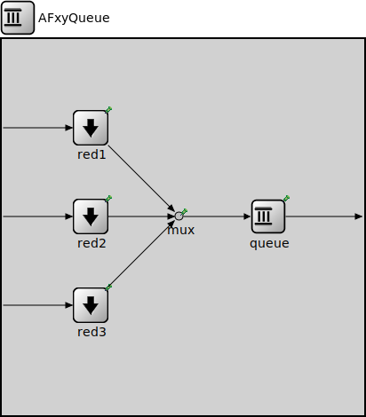

Package: inet.networklayer.diffserv
AFxyQueue
compound moduleThis is an example queue, that implements one class of the Assured Forwarding PHB group (RFC 2597).
Packets with the same AFx class, but different drop priorities arrive at the afx1In, afx2In, and afx3In gates. The received packets are stored in the same queue. Before the packet is enqueued, a RED dropping algorithm may decide to selectively drop them, based on the average length of the queue and the RED parameters of the drop priority of the packet.
The afxyMinth, afxyMaxth, and afxyMaxp parameters must have values that ensures that packets with lower drop priorities are dropped with lower or equal probability than packets with higher drop priorities.
<b>See also:</b> ~DiffservQueue
Usage diagram
The following diagram shows usage relationships between types. Unresolved types are missing from the diagram.
Used in compound modules
| Name | Type | Description |
|---|---|---|
| DiffservQueue | compound module |
This is an example queue, that can be used in interfaces of DS core and edge nodes to support the AFxy (RFC 2597) and EF (RFC 3246) PHBs. |
Parameters
| Name | Type | Default value | Description |
|---|---|---|---|
| wq | double | 0.002 |
smoothing factor, i.e. the weight of the current queue length in the averaged queue length |
| afx1Minth | double | 50 |
minimum queue length thresholds for dropping packets with drop priority 1 |
| afx1Maxth | double | 100 |
maximum queue length thresholds for dropping packets with drop priority 1 |
| afx1Maxp | double | 0.3 |
maximum probability of drop when the queue length is between thresholds for drop priority 1 |
| afx2Minth | double | 30 |
minimum queue length thresholds for dropping packets with drop priority 2 |
| afx2Maxth | double | 60 |
maximum queue length thresholds for dropping packets with drop priority 2 |
| afx2Maxp | double | 0.6 |
maximum probability of drop when the queue length is between thresholds for drop priority 2 |
| afx3Minth | double | 10 |
minimum queue length thresholds for dropping packets with drop priority 3 |
| afx3Maxth | double | 40 |
maximum queue length thresholds for dropping packets with drop priority 3 |
| afx3Maxp | double | 0.9 |
maximum probability of drop when the queue length is between thresholds for drop priority 3 |
Properties
| Name | Value | Description |
|---|---|---|
| display | i=block/queue;q=l2queue |
Gates
| Name | Direction | Size | Description |
|---|---|---|---|
| afx1In | input | ||
| afx2In | input | ||
| afx3In | input | ||
| out | output |
Unassigned submodule parameters
| Name | Type | Default value | Description |
|---|---|---|---|
| red1.displayStringTextFormat | string | "dropped %d/%p pk (%k/%l)" |
determines the text that is written on top of the submodule |
| red1.backpressure | bool | false | |
| red1.pkrate | double | 150 |
average packet rate for calculations when queue is empty |
| red1.useEcn | bool | false |
if enabled, packets are marked with ECN if applicable |
| red1.packetCapacity | int | int(maxth) |
packets are dropped if queue length is greater |
| red2.displayStringTextFormat | string | "dropped %d/%p pk (%k/%l)" |
determines the text that is written on top of the submodule |
| red2.backpressure | bool | false | |
| red2.pkrate | double | 150 |
average packet rate for calculations when queue is empty |
| red2.useEcn | bool | false |
if enabled, packets are marked with ECN if applicable |
| red2.packetCapacity | int | int(maxth) |
packets are dropped if queue length is greater |
| red3.displayStringTextFormat | string | "dropped %d/%p pk (%k/%l)" |
determines the text that is written on top of the submodule |
| red3.backpressure | bool | false | |
| red3.pkrate | double | 150 |
average packet rate for calculations when queue is empty |
| red3.useEcn | bool | false |
if enabled, packets are marked with ECN if applicable |
| red3.packetCapacity | int | int(maxth) |
packets are dropped if queue length is greater |
| mux.displayStringTextFormat | string | "passed %p pk (%l)" |
determines the text that is written on top of the submodule |
| mux.forwardServiceRegistration | bool | true | |
| mux.forwardProtocolRegistration | bool | true | |
| queue.displayStringTextFormat | string | "contains %p pk (%l) pushed %u\npulled %o removed %r dropped %d" |
determines the text that is written on top of the submodule |
| queue.packetCapacity | int | -1 |
maximum number of packets in the queue, no limit by default |
| queue.dataCapacity | int | -1b |
maximum total length of packets in the queue, no limit by default |
| queue.dropperClass | string | "" |
determines which packets are dropped when the queue is overloaded, packets are not dropped by default; the parameter must be the name of a C++ class which implements the IPacketDropperFunction C++ interface and is registered via Register_Class |
| queue.comparatorClass | string | "" |
determines the order of packets in the queue, insertion order by default; the parameter must be the name of a C++ class which implements the IPacketComparatorFunction C++ interface and is registered via Register_Class |
| queue.bufferModule | string | "" |
relative module path to the IPacketBuffer module used by this queue, implicit buffer by default |
Source code
// // This is an example queue, that implements // one class of the Assured Forwarding PHB group (RFC 2597). // // Packets with the same AFx class, but different drop priorities // arrive at the afx1In, afx2In, and afx3In gates. The received // packets are stored in the same queue. Before the packet // is enqueued, a RED dropping algorithm may decide to selectively // drop them, based on the average length of the queue and the RED parameters // of the drop priority of the packet. // // The afxyMinth, afxyMaxth, and afxyMaxp parameters must have values that // ensures that packets with lower drop priorities are dropped with lower // or equal probability than packets with higher drop priorities. // // @see ~DiffservQueue // module AFxyQueue { parameters: double wq = default(0.002); // smoothing factor, i.e. the weight of the current queue length in the averaged queue length double afx1Minth = default(50); // minimum queue length thresholds for dropping packets with drop priority 1 double afx1Maxth = default(100); // maximum queue length thresholds for dropping packets with drop priority 1 double afx1Maxp = default(0.3); // maximum probability of drop when the queue length is between thresholds for drop priority 1 double afx2Minth = default(30); // minimum queue length thresholds for dropping packets with drop priority 2 double afx2Maxth = default(60); // maximum queue length thresholds for dropping packets with drop priority 2 double afx2Maxp = default(0.6); // maximum probability of drop when the queue length is between thresholds for drop priority 2 double afx3Minth = default(10); // minimum queue length thresholds for dropping packets with drop priority 3 double afx3Maxth = default(40); // maximum queue length thresholds for dropping packets with drop priority 3 double afx3Maxp = default(0.9); // maximum probability of drop when the queue length is between thresholds for drop priority 3 @display("i=block/queue;q=l2queue"); gates: input afx1In; input afx2In; input afx3In; output out; submodules: red1: RedDropper { collectionModule = "^.queue"; wq = parent.wq; minth = parent.afx1Minth; maxth = parent.afx1Maxth; maxp = parent.afx1Maxp; @display("p=100,100"); } red2: RedDropper { collectionModule = "^.queue"; wq = parent.wq; minth = parent.afx2Minth; maxth = parent.afx2Maxth; maxp = parent.afx2Maxp; @display("p=100,200"); } red3: RedDropper { collectionModule = "^.queue"; wq = parent.wq; minth = parent.afx3Minth; maxth = parent.afx3Maxth; maxp = parent.afx3Maxp; @display("p=100,300"); } mux: PacketMultiplexer { @display("p=200,200"); } queue: PacketQueue { @display("p=300,200"); } connections: afx1In --> { @display("m=w"); } --> red1.in; afx2In --> { @display("m=w"); } --> red2.in; afx3In --> { @display("m=w"); } --> red3.in; red1.out --> { @display("m=m,100,20,0,50"); } --> mux.in++; red2.out --> { @display("m=m,100,50,0,50"); } --> mux.in++; red3.out --> { @display("m=m,100,80,0,50"); } --> mux.in++; mux.out --> queue.in; queue.out --> { @display("m=e"); } --> out; }File: src/inet/networklayer/diffserv/AFxyQueue.ned
 This documentation is released under the Creative Commons license
This documentation is released under the Creative Commons license